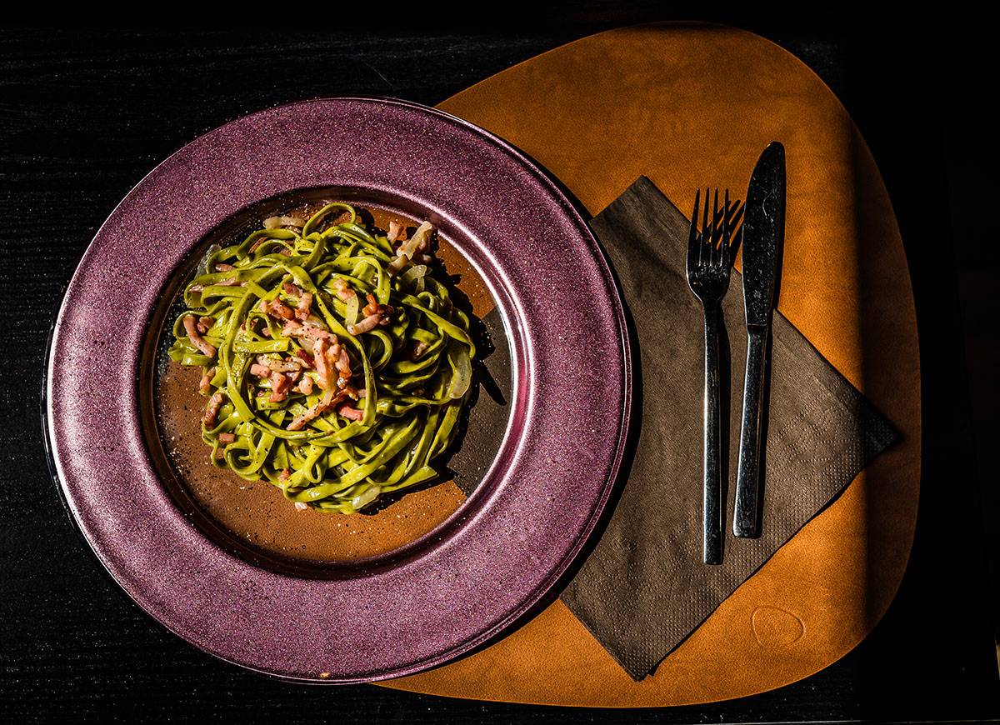
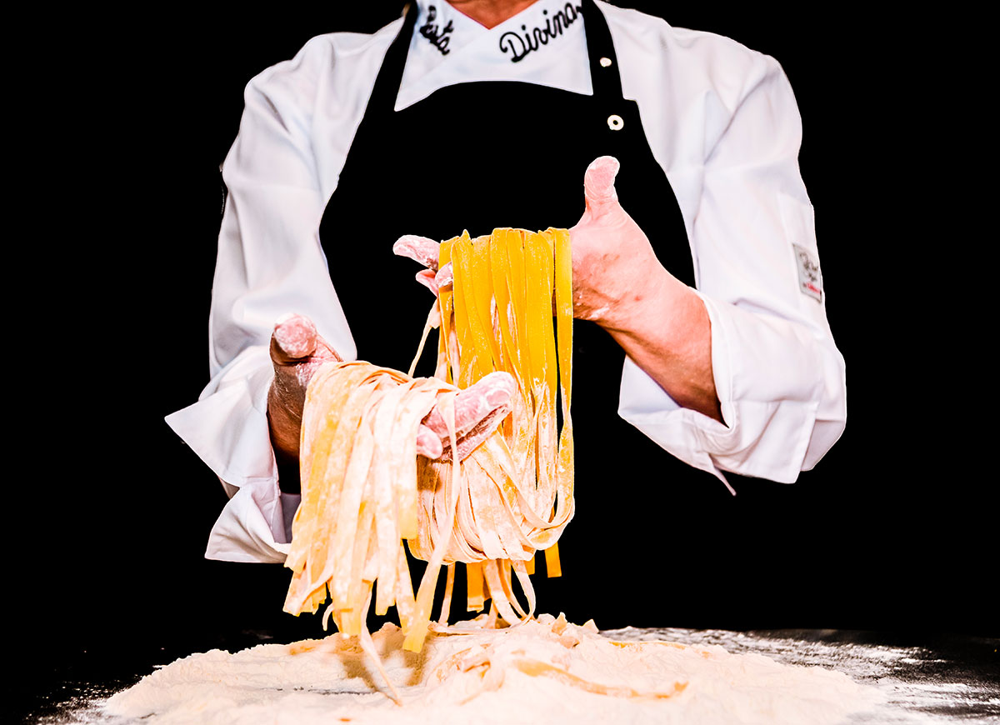
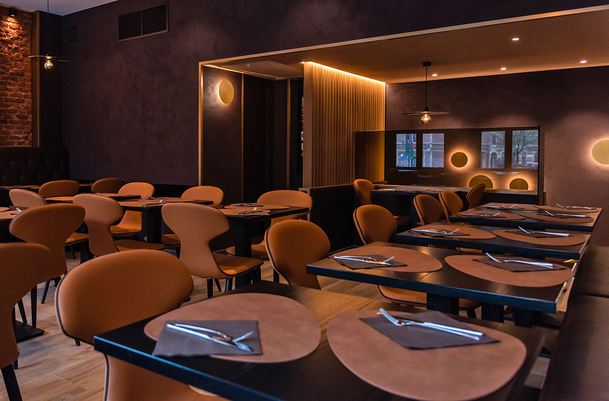

Plats
Carte
Découvrez la saveur des pâtes fraîches issues de notre savoir-faire traditionnel Antipasto, primo et/ou dolce : notre carte s’appuie sur les incontournables de la gastronomie italienne. Savourez nos pâtes fraîches & al dente cuisinées dans le respect de la tradition du pays natal de notre chef. Importés directement d’Italie, nos assortiments de fromage et de charcuterie sont sélectionnés pour vous offrir un voyage culinaire sans frontière. Composez vous-même votre assiette en choisissant vos pâtes et votre sauce ou laissez-vous transporter par l’une des spécialités de notre chef.
  